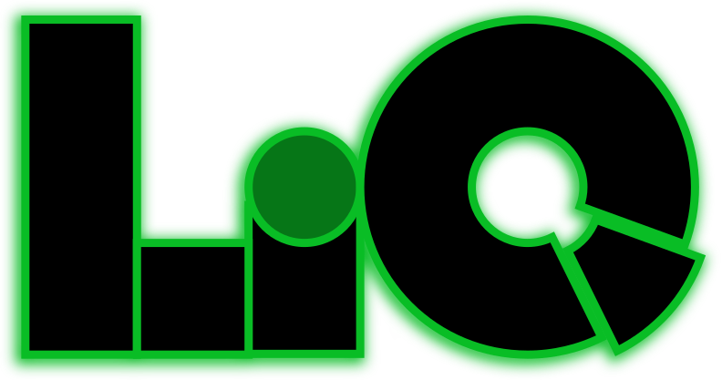

Liquers
Make derived data addressable. Every result has a short, URL-compatible name that says how to produce it.
-R/data/sales.csv/-/ns-rec /to_record /eq-region-EU /sort-month /report.html
datacommandargumentoutput format
One string, four roles
A query is a recipe, a link, a cache key and a provenance record.
Results that stay fresh
Cached with their dependencies, reused while valid, recomputed when not.
Runs where it is needed
The same commands serve over HTTP, run in a browser, a desktop app or Python.
Documentation
A user guide and an API reference for each language.